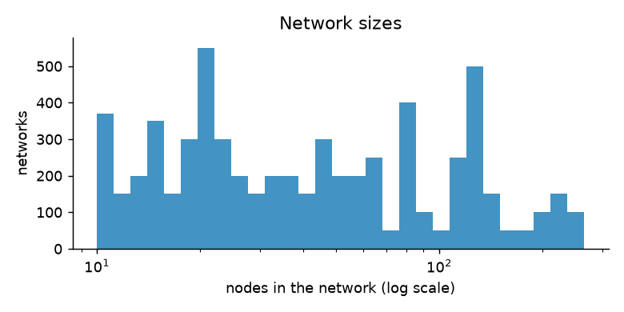

How a network is built¶
A network is the map of who supplies whom. It has five kinds of node:
| Letter | Node | What it does |
|---|---|---|
| S | Supplier | Provides one raw material |
| M | Factory (manufacturer) | Turns raw materials into the product |
| I | Warehouse (DC) or shop | Holds stock and sells it on |
| D | Customers | A stream of customer orders at one shop |
There is a single product. Every factory makes the same product, and every warehouse and shop stocks it. Goods flow from suppliers down to customers; orders flow the other way.
The code for this page is in generator/topology.py and generator/dataset.py.
Step by step¶
flowchart TD
A["Pick a size n<br/>(10–150 nodes, a few up to 300)"] --> B{"Pick a shape family"}
B -- "75%" --> C["Layered network"]
B -- "25%" --> D["Random tree"]
C --> E["Up to 50 different networks of size n"]
D --> E
E --> F["Remove repeats"]
F --> G["Put each network in<br/>train, validation or test"]1. Pick the size¶
The size n (number of nodes) is a whole number from 10 to 150. It is drawn on a log scale, so small and large sizes are equally common in ratio terms: 10–20 nodes is as likely as 75–150 nodes. This gives many small, cheap networks and still a good number of big ones.
About 5% of sizes are drawn again between 150 and 300 nodes and marked size_band = large. They test
whether a model trained on smaller networks still works on bigger ones.

2. Pick the shape family¶
- Layered network (75%). Suppliers → factories → 0 to 3 layers of warehouses → shops → customers. This is how most real supply chains are organised 1.
- Random tree (25%). A tree (each node has one supplier) of any shape, drawn so that every possible tree with that mix of node types is equally likely. These are often deep and thin, and serve as an "unusual shape" test.
3. Build a layered network¶
- How many warehouse layers. 0, 1, 2 or 3 layers, with chances 20%, 40%, 30% and 10%.
- How wide each layer is. Each layer is 2 to 20 times wider than the layer above it. Then all layers are shrunk by the same factor until the total equals n exactly. A warehouse layer that becomes too thin is dropped. There are 0.7 to 2.5 suppliers per factory.
- One supplier for every site. Every node gets one supplier in the layer above. Some suppliers get many children and some only a few, as in real life ("rich get richer" choice).
-
Extra links. The chance of each kind of extra link is drawn separately for each network:
Extra link What it means Chance per site Second supplier A warehouse or shop buys from two places in the layer above 10%–30% Skip link A site buys from two or more layers up, for example factory → shop 0%–8% Shared supplier A factory also uses a supplier that already serves another factory 5%–30% Warehouse with own customers A warehouse also sells straight to customers 0%–15% -
Customers. Every shop gets one customer stream.
4. Remove repeats¶
For each size, up to 50 different networks are made. Two networks count as the same if they have
the same shape and the same node types in the same places. This is checked with a graph fingerprint,
the Weisfeiler–Lehman hash 2. Within one draw, repeats are thrown away. The same size can be drawn
more than once, so a network can still match one from another draw. Such a network is kept, but marked
in the dup_of column with the id of the first copy, so it is easy to skip.
5. Split for machine learning¶
Each network goes to training (70%), validation (15%) or testing (15%). The choice comes from the network's fingerprint, so identical networks always land in the same group. A model is therefore never tested on a network shape it was trained on.
How often each feature appears¶
| Feature | Share |
|---|---|
| Layered network / random tree | 77% / 23% of networks |
| Warehouse layers 0 / 1 / 2 / 3 (layered networks) | 24% / 57% / 17% / 1% |
| At least one node with two or more suppliers | 96.4% of layered networks |
| Large networks (over 150 nodes) | 7.3% of networks |
| Suppliers that can run out | 50.6% of setups |
| Sites that can break down | 60.3% of setups |
| Seasonal demand | 69.4% of setups |
| Stress / control setups | 80.0% / 20.0% |
| Base setups with what-if copies | 25.1% |
Known gap
Three warehouse layers are rarer than planned, because the shrinking step in 3.2 often drops the thinnest layer. A fix is planned for a later version.
-
S. Chopra and P. Meindl, Supply Chain Management: Strategy, Planning, and Operation, Pearson (any recent edition), chapter on designing distribution networks. ↩
-
N. Shervashidze, P. Schweitzer, E. J. van Leeuwen, K. Mehlhorn and K. M. Borgwardt, "Weisfeiler-Lehman Graph Kernels", Journal of Machine Learning Research 12, 2011. As implemented in NetworkX: https://networkx.org/documentation/stable/reference/algorithms/generated/networkx.algorithms.graph_hashing.weisfeiler_lehman_graph_hash.html ↩